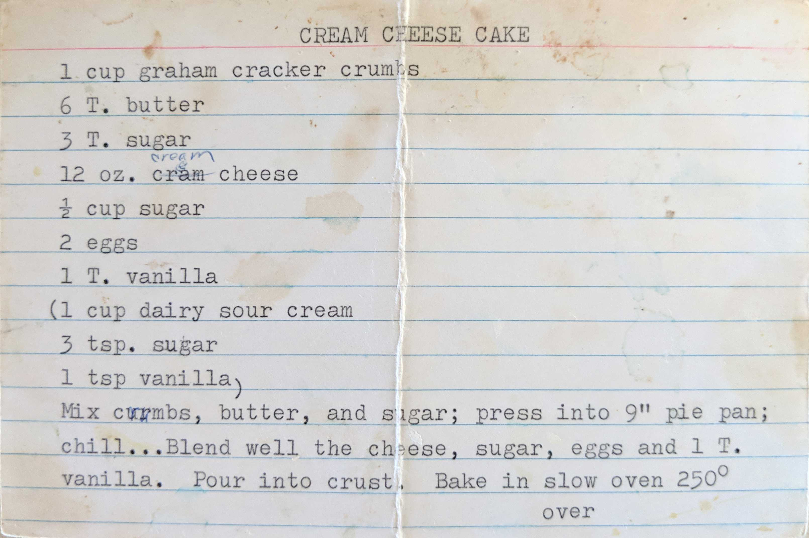
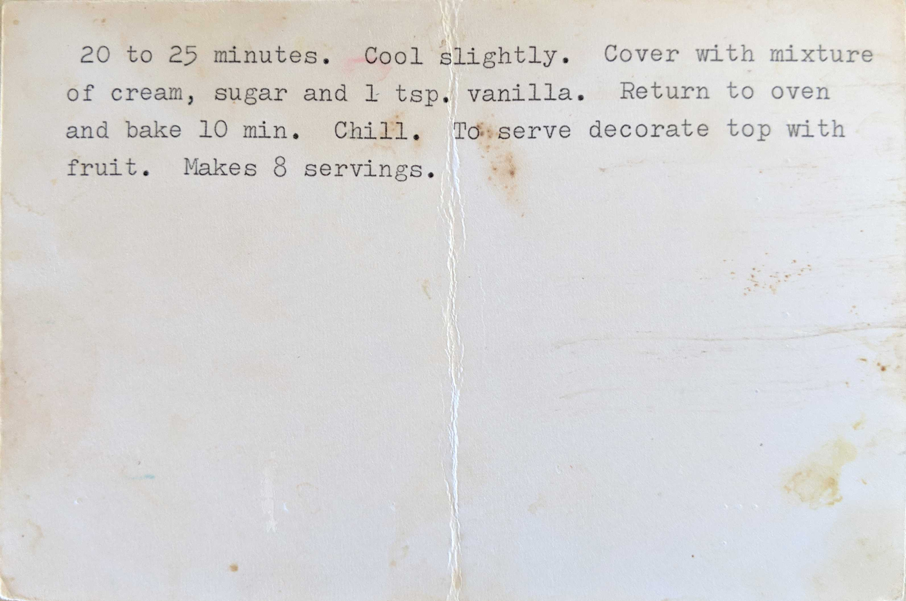

CREAM CHEESE CAKE
1 cup graham cracker crumbs
6 T. butter
3 T. sugar
12 oz. cream cheese
1/2 cup sugar
2 eggs
1 T. vanilla
(1 cup dairy sour cream
3 tsp. sugar
1 tsp vanilla)
Mix crumbs, butter, and sugar; press into 9"pie pan; chill...Blend well the cheese, sugar,
eggs and 1 T. vanilla. Pour into crust. Bake in slow oven 250°
over

20 to 25 minutes. Cool slightly. Cover with mixture of cream, sugar and 1 tsp. vanilla. Return to oven and bake 10 min. Chill. To serve decorate top with fruit. Makes 8 servings.